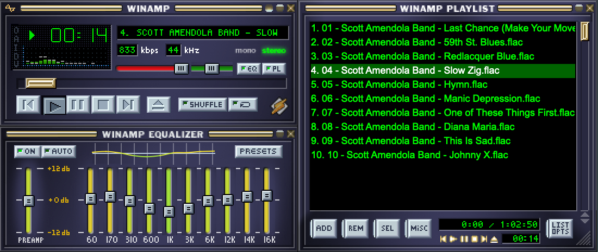
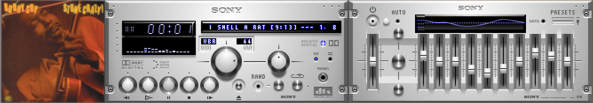
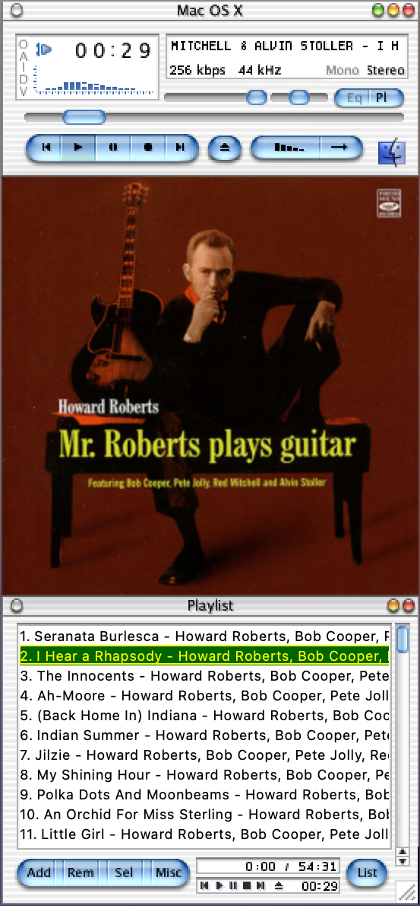
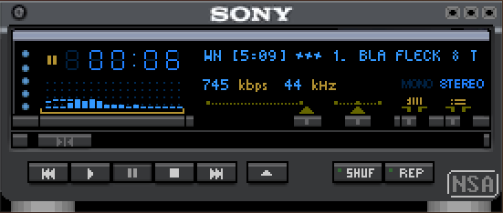
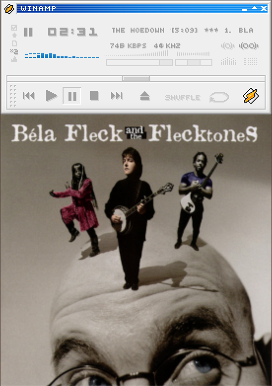
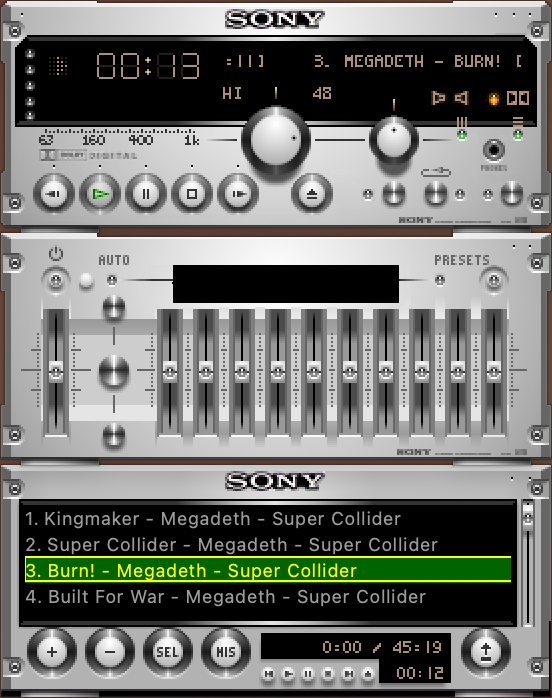

A cross-platform desktop music player with pixel-perfect Winamp skin support. Play your local collection with a fun retro-pixel UI that looks great on modern desktops.

Compatible with thousands of classic Winamp skins. Load any .wsz file and enjoy pixel-perfect rendering.
Choose between spectrum analyzer or waveform modes. Watch your music come alive in retro style.
Support for embedded metadata and folder art. See the visual side of your music collection.
Play your entire local collection including hi-res lossless files. Quality playback you can trust.
Works on macOS, Windows, and Linux. Same great experience on every desktop.
No complex database or library to manage. WimPyAmp trusts your existing folder structure and playlists.
Built with Python and PySide6. MIT licensed. Contributions welcome on GitHub.
Choose from thousands of skins or create your own





Free and open source. Choose your platform.
Prefer running from source? Check the README for setup instructions.